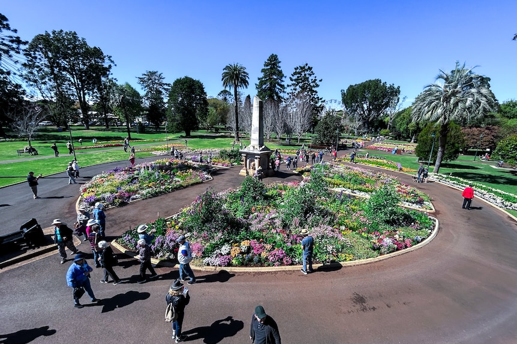

Toowoomba has long been known as the Garden City, and its parks are where that reputation really comes to life. From shaded picnic lawns to off-leash trails under towering trees, this list rounds up the ten parks locals rate highest for a relaxed afternoon out. Whether you're chasing a playground for the kids, a BBQ spot for the weekend, or a quiet walking track, there's a park here for it.
Top 10 parks in Toowoomba
01

1. Queens Park & Botanic Gardens
Playground
BBQ
Toilets
Shade
Queens Park and its adjoining Botanic Gardens are Toowoomba's most iconic green space, spread across tree-lined avenues and open lawns near the city centre. Families come for the playgrounds and picnic areas, while the gardens themselves burst into colour each year during the Carnival of Flowers. Wide paths make it easy to wander at your own pace, with plenty of shade from mature trees along the way. It's the park most visitors see first, and it rarely disappoints.
Laurel Bank Park is a heritage-listed garden known for its neatly kept flower beds, scented plantings, and a playful topiary train that delights younger visitors. It's a quieter alternative to Queens Park, with shaded lawns that suit a relaxed picnic or afternoon stroll. Seasonal displays mean the park looks a little different every time you visit. It's an easy, low-key spot to slow down close to the CBD.
Picnic Point Parklands sits on the edge of the Toowoomba Range, with sweeping views across the Lockyer Valley from its lookout points. Walking tracks wind through the surrounding bushland, making it a favourite for a longer stroll rather than a quick visit. BBQ areas and picnic shelters are dotted throughout, so it suits everything from a solo coffee stop to a full family gathering. Sunrise and sunset both make the trip worthwhile.
Lake Annand Park centres on a peaceful lake that draws plenty of local birdlife, making it a nice change of pace from Toowoomba's garden-style parks. A generous playground and open grassy areas keep kids entertained while you circle the path around the water. It's well shaded and generally uncrowded, even on weekends. A good pick if you want somewhere calm rather than a big event-style park.
Redwood Park is one of the more low-key parks on this list, but it's a firm favourite with dog owners thanks to its off-leash area and hilly walking tracks. The terrain is a bit more uneven than other parks in Toowoomba, which makes it a nicer option if you're after some actual exercise. Tree cover keeps most of the park shaded, even in the middle of the day. It's not flashy, but it's exactly what regular dog walkers are looking for.
Ju Raku En is Toowoomba's Japanese garden, built around a calm lake with traditional landscaping, stepping stones, and carefully placed plantings. It's a slower, more contemplative kind of park than most on this list, better suited to a quiet walk than an active afternoon. Paths wind past the water and through shaded sections, making it pleasant even on a warm day. If you want a genuine change of pace, this is where to find it.
Jubilee Park is by far the largest park in Toowoomba, covering hundreds of hectares of bushland below the escarpment. It's built for hikers, trail runners, and mountain bikers, with tracks ranging from easy walks to genuinely challenging rides. Facilities are more basic here than in the city parks, but the scale and scenery more than make up for it. If you want to properly stretch your legs, this is the park to head for.
Webb Park sits on the Toowoomba Range escarpment and is best known for its lookout views across the surrounding valley. It's a popular spot for a walk with a payoff at the end, rather than a park you'd settle into for hours. The mix of open lookout areas and shaded walking paths suits an easy loop rather than a big hike. Worth the trip for the view alone.
Heller Street Park is built around a themed playground that's become a go-to for birthday parties and family outings. It's a smaller, more focused park than most on this list, aimed squarely at kids rather than long walks or picnics. Shaded seating nearby makes it easy for parents to keep an eye on things without baking in the sun. A solid choice if a great playground is your main priority.
East Creek Park follows the creek corridor through the city, giving it a different feel to Toowoomba's garden-style parks. It's better suited to a walk, jog, or bike ride than a picnic, with a path that connects easily to other parts of town. Trees along the creek line provide reliable shade for most of the route. A handy option if you want to combine parkland with getting somewhere.
That's our current top ten, but Toowoomba has no shortage of great green spaces — this list may grow as we find more worth sharing. Whichever one you choose, we hope it's a great afternoon outdoors.